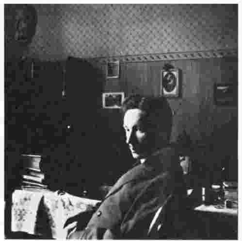

为什么要讨论存在？“存在”这一术语可以形成很多对比。首先，它与“知识”和“科学”相对。与海德格尔同时代的以及更早的哲学家们，尤其是那些自称的康德的追随者们，主要关心的是认识论或知识论，所提出的是诸如“我们可以认识什么？”以及“科学的基础是什么？”这类问题。海德格尔对认识论很反感，原因在于它“只是耽于磨刀，却从不用刀切割”（lviii.4）。知识，尤其是科学的系统知识，涉及到一方面是认识者和另一方面是作为认识对象的客体或一系列客体之间的关系，也就是认识关系。海德格尔对认识论的质疑与以上两个方面三种因素都有关。
首先讲一讲认识者。它是什么？是完全专注于对其主题进行不偏不倚地理论认识的主体？还是一个有着私心杂念的活生生的人，处于特定地点和特定时间，除了其科学认识的客体之外还与其他很多东西存在千丝万缕的联系、对它们持有纷繁复杂的态度？其次，我们来看看认识关系。为什么要讲认识？认识行为只是我们同世界发生的很多关系中的一个；它不是我们与世界中的事物所建立的第一个关系，而是在一个人的一生中很迟才会发生，并且还是偶尔为之；它也不是（比如说）面对自己的配偶或对待自己的前门钥匙时所采取的最明显的态度。认识是如何同对待事物的这些别样态度相关联的？认识由什么构成？我们倾向于把认识看成是具有同一性的事物，好像对电子的认识跟对历史事件的认识在方式上别无二致。或者说，如果我们注意到并非如此的话，我们就会像笛卡尔那样被诱使去提出一个认识的理想形式，这个形式将保证得出关于物质粒子的大小和运动千真万确的结果。但是，这种形式对于（比如说）历史事件没有用，因此历史事件也就被排除在可认识的客体之外。如果拒绝这条路线，我们就会意识到认识一系列实体的路线部分取决于那些实体的性质或存在。我们认识历史事件用一种方式，而了解电子则用另一种方式：我们不会靠细查历史文件去了解粒子或者到实验室去了解拿破仑。这是因为，历史事件是不同于电子的实体。因此，在论述知识之前，我们应该先考虑已知客体的性质或者说存在。
客体或实体种类繁多：数字、植物、星体、动物等等，不一而足。某一种类的实体通常是一门特定学科的研究专区。天文学家研究星体，植物学家研究植物，等等。如果哲学家研究存在而非知识，那么他是否也应该研究星体和植物，他与科学专家的不同之处仅在于所掌握知识的广泛性和普遍性上、同时他还带着与广泛相伴的肤浅？答案是否定的。那样不仅会把哲学家降低到海德格尔不会容忍的地位，而且也会遗漏一个关于科学客体的更重要、更基本的问题。我们用这种方式怎样划分实体世界呢？世界并不会自然而然地用科学的现成性被塑造出来并呈现给我们。当一对情侣手拉手走过星空下的草地，他们不会把自己和周围的环境看成是分离出来供地质学家、植物学家和气象学家研究的客体，哪怕他们自己本身在生活中从事着某项专业研究，比方说，他们是地质学家。诸门学科及其研究对象的范围从来没有像如今这样泾渭分明。即使在不久以前，科学家有时仍然会重新界定他们所研究课题的性质：为它重新划分范围，构想关于其内容的新的概念，开创认识研究对象的新思路并舍弃旧的路线。只是把存在的观点投射到实体之上，这种投射又是任何一种科学研究的根本基础——这样做的科学家是什么样的科学家呢？
然而，这样我们又有了另一个问题。如果一位科学家——至少是一个沉思的、富有创新精神的科学家——也去思考他所研究的主题的存在问题，那么哲学家还剩下什么可以做呢？为什么不干脆留给科学家去做？海德格尔主张，这是因为科学家仅仅关注诸多存在“区域”中的一个；作为科学家他会忽视投射发生的背景、留给其他科学研究的客体以及我们所熟悉的赖以日常之用的物件，而这些都完全没有进入理论科学领域。至于如其所是的存在的性质，或者对存在的非正式的总体性理解，这种理解可以使科学家专注于存在的一个区域，这些就更不用说了。
海德格尔有可能已经说服了我们，让我们把焦点投放到实体而非对于实体的知识或各门科学上面。但在海德格尔这里，“存在”不仅与知识，也与“存在者”或“实体”相对。为什么研究存在而不是存在者？我们很早以前就知道，动词“存在”（to be）有很多用法或含义：存在者、述谓者，以及表示同一性的“是”（is）。为什么我们要将这一问题看做是对于科学来讲至关重要，或者看成是主要的、大概也是唯一的真正哲学问题呢？科学家可以确认有些实体存在着（存在性的“是”）及它们是什么（述谓性的“是”）。那么他或者作为哲学家的他关于存在还能做些什么呢？海德格尔认为，存在并非是一个如其表面所呈现的那种单薄而又索然无味的课题。为了了解为什么如此，我们得看看海德格尔从布伦塔诺论亚里士多德的书中以及亚里士多德本人的著作中所找到的“存在的各种意义”。
亚里士多德认为，动词“是”（to be）在几个方面都存在着歧义。当我们说某物是（如此如此或这般这般），我们可能指它实然地是或或然地是。（在亚里士多德看来，实然性在逻辑上要先于或然性。）另外“是”有时又相当于“为真，符合实际情形”。然而，更重要的是，“是”的意义随着它应用于其上的实体范畴的不同而不同。亚里士多德提出了十个范畴，其中最基本的是物质，其他诸如性质、数量和关系等项目的存在则有赖于物质范畴。世界上万事万物都分属于以上非此即彼的范畴，因而它们是实体的类或属。但是，按亚里士多德的观点，它们是最高等级的属。存在者作为一个整体并不能构成一个属，因为“存在”有着歧义：这一点显而易见，我们可以试想一下，比如一匹马这样的物质只是存在 着，而马的棕色这样一种属性则是属于 马的颜色，它的存在取决于它所属的物质的存在。一个意义含糊或模棱两可的术语不能界定一个属：马作为一种动物，构成一个单属，但如果我们将“马”这个词按其全部意义进行理解，就会涵盖木马、“衣马” [1] 、鞍马以及作为动物的马，我们谈的就不再是一个真正意义上的属，而只是由一个歧义性的名词聚集起来的互不相干的实体集合。“马”与“存在”的区别在于，马的不同意义之间并不是从根本上联系在一起的，而是通过历史偶然性和表面相似性相联系，但“存在”的不同意义则是系统地并从根本上联系在一起，具有亚里士多德曾经提到的“类比”的同一性。一切事件中的存在，尽管含义各不相同，都足以被结合起来构成一个独立的研究课题，而“马”的不同种类却不能做到这一点——尽管存在并非像马那样构成一个类属。

图3海德格尔在1912年春
在其随后的研究史中，存在不断地获得意义上的增益和精细化。例如，在中世纪，作为本质的存在和作为存在的存在就得以区别开来，这一点在亚里士多德那里并没有很清晰地出现。这些已经足够说明海德格尔存在问题的背景。在存在包含不同的类型这一点上，他跟亚里士多德是一致的，即使他们对“存在”意义的理解并不完全一致。因此，在“那个”存在（那个 某物是或存在这样一个事实）以及“什么”存在（那是什么）之外，他又引入了第三个术语：“如何”存在，即某个实体存在的模式、方式或类型。例如，如果我们暂且停留在亚里士多德范畴的界限之内，首先我们就会看到马的存在这样一个事实，其次还有马拥有的、在总体上将它区别于其他动物和其他实体的那些特征，最后是它的存在方式，即马是一种物质，而不是属于其他范畴的一个实体。或者，我们来分析亚里士多德范畴之外的一个例子：数学家研究数字的“什么”时，会提出诸如是否每一个偶数都是两个奇数之和这样的问题，而哲学家会就数字的存在、怎样存在以及存在的方式提出问题（参见xxii.8，43；xx.149）。像胡塞尔那样，他或许会回答说，数字既不是物理上的实体，也不是心理上的实体，而是“观念性”胜于“实在性”的实体。这样，它们存在的方式就是观念性的而非实在性的。
既然亚里士多德与其后继者就存在这一问题已经作过那么多研究，海德格尔还能做什么呢？海德格尔常常建议哲学家不要接受那些已经僵化成教条的学说，即使它们恰巧是正确的；哲学家应该回到这一学说源起的地方，重新予以思考。但是，这种重新思考毫无例外会在一定程度上对这一承继下来的学说进行修正。于是，海德格尔便在几个方面与亚里士多德展开争论。尤其是，亚里士多德暗示，尽管他提出了诸多范畴，但作为存在的所有真实存在的实体都是一致的，万事万物——上帝、人、植物、动物、雕像和凿子——都具有属性、数量、关系等等。所有的实体都被视为“现成在手的”（vorhanden），是客观描写的合适客体。海德格尔在《存在与时间》中指出，并非所有的实体都属于此类。例如，一把锤子，用适当的眼光来看，首先是我们所使用的一样东西（工具），如果谈得上描述它，适当的描述应是“很沉”或“刚合用”，而不是从它的体积和物理特性上加以描述。情人送给他的爱人的礼物是花，而不是植物，不是植物学研究的对象。甚至那些看起来对不同实体作出了区分的哲学家，经过更加细致的研究，我们也能看出他们把这些实体类型都归化为同一个模式。例如，笛卡尔非常鲜明地将思维的物或实体（res cogitans）和延展性的物或实体（res extensa）区分开。但是笛卡尔不仅将工具的存在和行星的存在同化在一起——二者实质上都是延展性的物，而且，尽管不甚明显，他还将思维的物的存在与延展性的物的存在同化在一起，因为二者都具有作为物的本质属性，尽管它们各自的本质属性有所不同。我们是不是不能说在或存在着的万物以同样的方式在或存在，存在着就意味着成为谓词的承担者（或是“变量的值”），抑或明显地以不同方式存在的实体承载着不同的谓词呢？海德格尔的回答是，并非一切事物都是谓词的承担者，如果认为一切事物都是，就是在暗中引入存在的同质化。
为什么哲学家会对实体的存在予以同质化？海德格尔暗示，其中一个原因可能是他们集中于单个实体或实体类型，排除了实体所处的环境。例如，如果人们忽视了全神贯注用锤子敲钉子的木匠，就更容易将锤子视为“现成在手的”，把它看做具有某些属性的物或看做谓词的承担者。我们不仅要考虑世界之内的实体的存在，而且还要考虑它们所处周围环境的存在，并最终从整体上把握世界的存在。我们也需要注意如其所是的存在，注意这样的存在为什么会分化成不同的类别。
不过，海德格尔并没有马上考虑作为整体的诸存在或如其所是的存在。他转向了对人的存在，即此在的研究。